用法：A型题点选项即判；X型题先多选、再点【判卷】；答完自动展开解析。刷完本课再过一遍底部【本课速记卡】，效果最好。
一、中枢神经系统感染性疾病6 题
A型·单选Q1P1 · 流脑
流行性脑脊髓膜炎的致病菌和流行季节是
答案与解析
答案：B
流脑：脑膜炎双球菌；冬春季多见、经飞沫呼吸道传播。
📖 讲义定位：P1 · 流脑
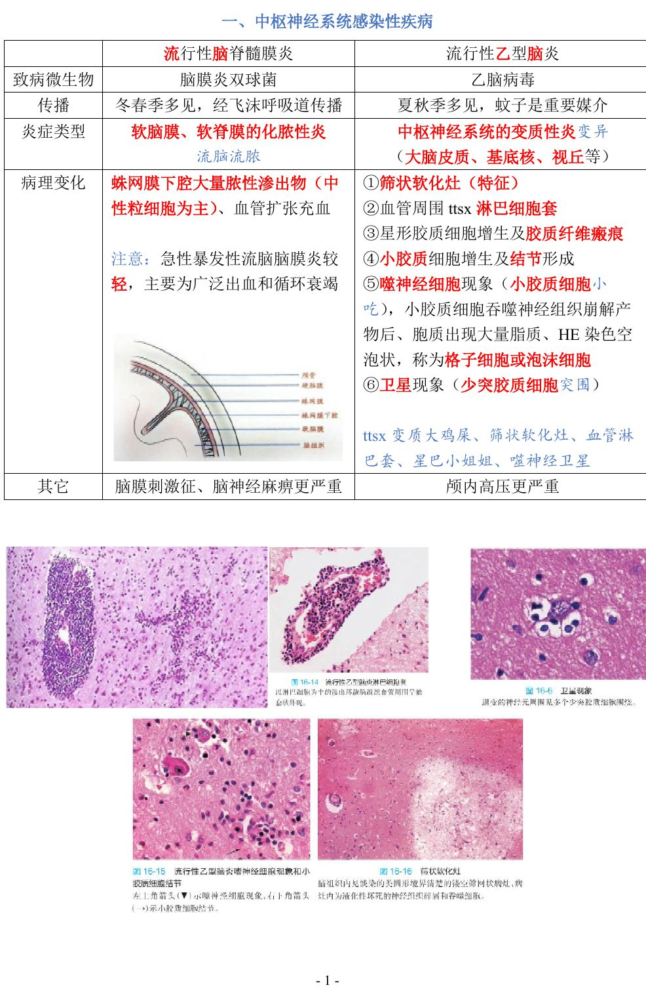
📷 讲义原图 · P1 · 流脑
A型·单选Q2P1 · 流脑
流行性脑脊髓膜炎的病理性质是
答案与解析
答案：C
流脑＝软脑膜、软脊膜的化脓性炎（『流脑流脓』）：蛛网膜下腔大量脓性渗出物（中性粒细胞为主）、血管扩张充血。注意：急性暴发性流脑脑膜炎较轻，主要为广泛出血和循环衰竭。
📖 讲义定位：P1 · 流脑
A型·单选Q3P1 · 乙脑
流行性乙型脑炎的病理性质是
答案与解析
答案：D
乙脑＝中枢神经系统的变质性炎（大脑皮质、基底核、视丘等）；夏秋季多见、蚊子是重要媒介。
📖 讲义定位：P1 · 乙脑
A型·单选Q4P1 · 乙脑
流行性乙型脑炎的特征性病变是
答案与解析
答案：A
乙脑特征：筛状软化灶；还有血管周围淋巴细胞套、星形胶质细胞增生及胶质瘢痕、小胶质细胞结节、噬神经细胞现象、卫星现象。
📖 讲义定位：P1 · 乙脑
A型·单选Q5P1 · 乙脑
少突胶质细胞围绕在受损神经元周围的现象称为
答案与解析
答案：D
卫星现象＝少突胶质细胞包围神经元；噬神经细胞现象＝小胶质细胞吞噬神经组织崩解产物（其胞质出现大量脂质、呈空泡状＝格子细胞/泡沫细胞）。
📖 讲义定位：P1 · 乙脑
X型·多选Q6P1 · 乙脑
流行性乙型脑炎的病变有
答案与解析
答案：ACD
B 错：蛛网膜下腔大量脓性渗出物是流脑（化脓性炎）的特点。
📖 讲义定位：P1 · 乙脑
二、伤寒6 题
A型·单选Q7P2 · 伤寒
伤寒的基本病变是
答案与解析
答案：B
伤寒：全身单核-巨噬细胞系统增生（肝、脾、骨髓、淋巴结等），以回肠末端集合、孤立淋巴小结多见。
📖 讲义定位：P2 · 伤寒
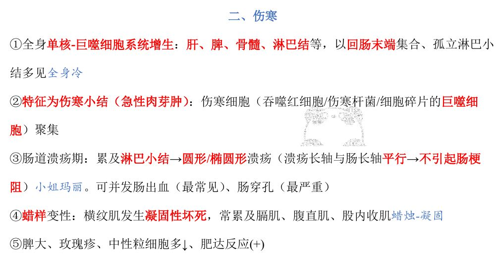
📷 讲义原图 · P2 · 伤寒
A型·单选Q8P2 · 伤寒
伤寒小结（伤寒肉芽肿）的构成细胞是
答案与解析
答案：A
特征为伤寒小结（急性肉芽肿）：伤寒细胞（吞噬红细胞/伤寒杆菌/细胞碎片的巨噬细胞）聚集。
📖 讲义定位：P2 · 伤寒
A型·单选Q9P2 · 伤寒
伤寒肠道溃疡的形态特点是
答案与解析
答案：C
伤寒溃疡：累及淋巴小结→圆形/椭圆形溃疡、长轴与肠长轴平行→不引起肠梗阻（『小姐玛丽』）。可并发肠出血（最常见）、肠穿孔（最严重）。
📖 讲义定位：P2 · 伤寒
A型·单选Q10P2 · 伤寒
伤寒最严重和最常见的肠道并发症分别是
答案与解析
答案：D
伤寒肠道并发症：肠出血（最常见）、肠穿孔（最严重）。
📖 讲义定位：P2 · 伤寒
A型·单选Q11P2 · 伤寒
伤寒的『蜡样变性』是指
答案与解析
答案：B
蜡样变性：横纹肌凝固性坏死（『蜡烛-凝固』），常累及膈肌、腹直肌、股内收肌。
📖 讲义定位：P2 · 伤寒
A型·单选Q12P2 · 伤寒
关于伤寒的临床与实验室表现，正确的是
答案与解析
答案：C
伤寒：脾大、玫瑰疹、中性粒细胞多↓、肥达反应(+)。
📖 讲义定位：P2 · 伤寒
三、细菌性痢疾4 题
A型·单选Q13P2 · 菌痢
细菌性痢疾的好发部位是
答案与解析
答案：A
菌痢以直肠和乙状结肠多见；表现为黏液脓血便、里急后重。
📖 讲义定位：P2 · 菌痢
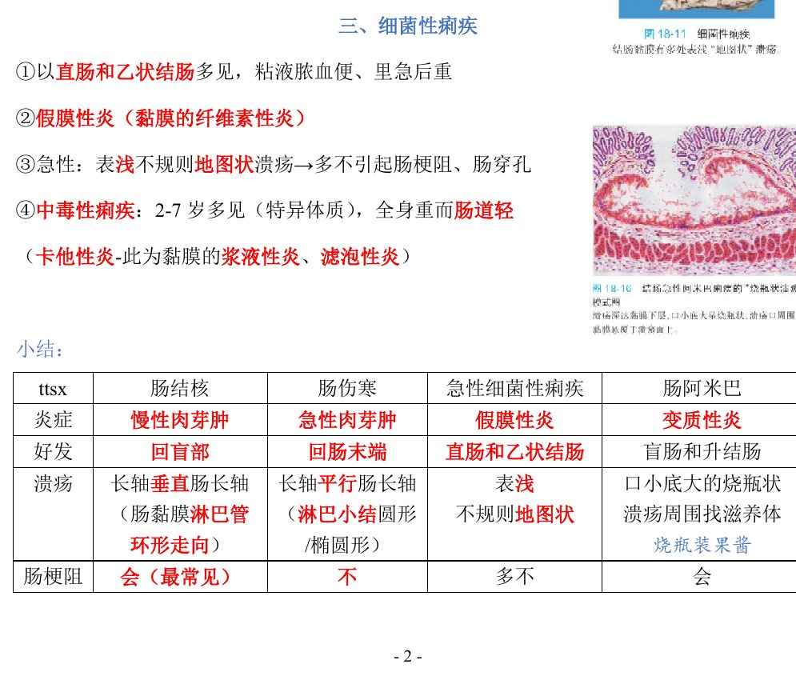
📷 讲义原图 · P2 · 菌痢
A型·单选Q14P2 · 菌痢
细菌性痢疾的炎症性质是
答案与解析
答案：C
菌痢＝假膜性炎（黏膜的纤维素性炎）。
📖 讲义定位：P2 · 菌痢
A型·单选Q15P2 · 菌痢
急性细菌性痢疾的溃疡特点是
答案与解析
答案：B
急性菌痢：表浅不规则地图状溃疡→多不引起肠梗阻、肠穿孔。
📖 讲义定位：P2 · 菌痢
A型·单选Q16P2 · 菌痢
中毒性细菌性痢疾的特点是
答案与解析
答案：D
中毒性痢疾：2-7 岁多见（特异体质），全身重而肠道轻（卡他性炎＝黏膜的浆液性炎、滤泡性炎）。
📖 讲义定位：P2 · 菌痢
四、肠溃疡对比（专题）7 题
配伍题 · 共用选项，每题选一个
A. 肠结核
B. 肠伤寒
C. 急性细菌性痢疾
D. 肠阿米巴病
Q17P3 · 溃疡对比
溃疡长轴与肠长轴垂直，最易致肠梗阻
答案与解析
答案：A
肠结核：环形溃疡（与肠黏膜淋巴管走向一致）→长轴⊥肠长轴→易致肠梗阻。
📖 讲义定位：P3 · 溃疡对比
Q18P3 · 溃疡对比
溃疡长轴与肠长轴平行，不引起肠梗阻
答案与解析
答案：B
肠伤寒：溃疡与淋巴小结形态一致（圆形/椭圆形）→长轴∥肠长轴→不引起肠梗阻。
📖 讲义定位：P3 · 溃疡对比
Q19P3 · 溃疡对比
表浅不规则地图状溃疡
答案与解析
答案：C
急性菌痢：表浅不规则地图状溃疡。
📖 讲义定位：P3 · 溃疡对比
Q20P3 · 溃疡对比
口小底大的烧瓶状溃疡
答案与解析
答案：D
肠阿米巴：口小底大烧瓶状溃疡，溃疡周围可找到滋养体。
📖 讲义定位：P3 · 溃疡对比
Q21P3 · 溃疡对比
好发于回盲部
答案与解析
答案：A
肠结核好发回盲部。
📖 讲义定位：P3 · 溃疡对比
Q22P3 · 溃疡对比
好发于盲肠和升结肠
答案与解析
答案：D
肠阿米巴好发盲肠和升结肠。
📖 讲义定位：P3 · 溃疡对比
X型·多选Q23P2–3 · 阿米巴
关于肠阿米巴病，下列叙述正确的有
答案与解析
答案：ABD
C 错：长轴与肠长轴平行是肠伤寒的特点；阿米巴溃疡为烧瓶状、属于变质性炎。
📖 讲义定位：P2–3 · 阿米巴
五、血吸虫病5 题
A型·单选Q24P2 · 血吸虫
在血吸虫病中，给患者造成最大危害的是
答案与解析
答案：A
虫卵引起的损害最主要最严重（肉芽肿）；主要沉着于直肠、乙状结肠、肝；属 Ⅳ 型变态反应。
📖 讲义定位：P2 · 血吸虫
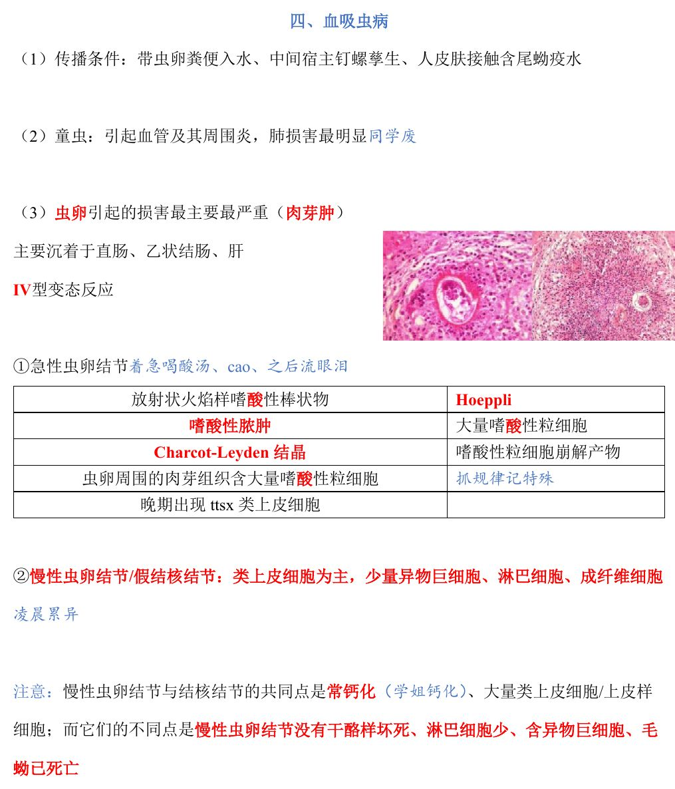
📷 讲义原图 · P2 · 血吸虫
A型·单选Q25P2 · 血吸虫
急性血吸虫病由虫卵引起的早期基本病理变化是
答案与解析
答案：D
急性虫卵结节＝嗜酸性脓肿：放射状火焰样嗜酸性棒状物（Hoeppli）、大量嗜酸性粒细胞、Charcot-Leyden 结晶（嗜酸性粒细胞崩解产物）；晚期出现类上皮细胞。
📖 讲义定位：P2 · 血吸虫
A型·单选Q26P2 · 血吸虫
慢性虫卵结节（假结核结节）的主要成分是
答案与解析
答案：B
慢性虫卵结节/假结核结节：类上皮细胞为主，少量异物巨细胞、淋巴细胞、成纤维细胞（『凌晨累异』）。
📖 讲义定位：P2 · 血吸虫
A型·单选Q27P2 · 血吸虫
慢性虫卵结节与结核结节的鉴别要点是
答案与解析
答案：C
共同点：常钙化、大量类上皮细胞；不同点：慢性虫卵结节没有干酪样坏死、淋巴细胞少、含异物巨细胞、毛蚴已死亡。
📖 讲义定位：P2 · 血吸虫
A型·单选Q28P2 · 血吸虫
血吸虫病传播的三个条件是
答案与解析
答案：A
传播条件：带虫卵粪便入水、中间宿主钉螺孳生、人皮肤接触含尾蚴疫水。
📖 讲义定位：P2 · 血吸虫
六、性传播疾病6 题
A型·单选Q29P3 · 梅毒
梅毒的基本病变是
答案与解析
答案：A
梅毒基本病变：闭塞性动脉内膜炎、小血管周围炎、肉芽肿（『周围塞车肿么办』）。
📖 讲义定位：P3 · 梅毒
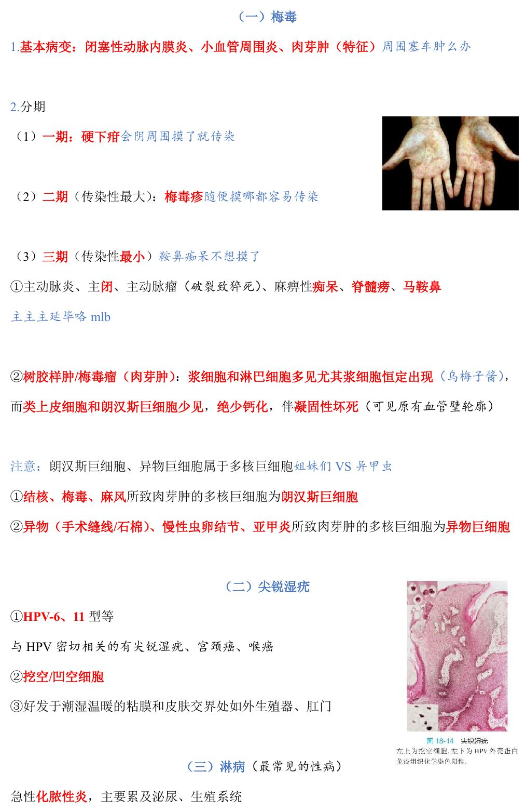
📷 讲义原图 · P3 · 梅毒
A型·单选Q30P4 · 梅毒
传染性最大的梅毒分期是
答案与解析
答案：C
一期＝硬下疳；二期＝梅毒疹（传染性最大）；三期（传染性最小）＝主动脉炎、麻痹性痴呆、脊髓痨、马鞍鼻、树胶样肿。
📖 讲义定位：P4 · 梅毒
A型·单选Q31P4 · 梅毒
梅毒树胶样肿（梅毒瘤）的特点是
答案与解析
答案：B
树胶样肿：浆细胞和淋巴细胞多见（尤其浆细胞恒定出现『乌梅子酱』），类上皮细胞和朗汉斯巨细胞少见，绝少钙化，伴凝固性坏死（可见原有血管壁轮廓）。
📖 讲义定位：P4 · 梅毒
A型·单选Q32P4 · 梅毒
梅毒性增生性动脉内膜炎时，血管周围浸润的特征性炎细胞是
答案与解析
答案：D
梅毒性动脉内膜炎时血管周围浸润的特征性炎细胞是浆细胞。
📖 讲义定位：P4 · 梅毒
X型·多选Q33P4 · 梅毒
下列属于梅毒病变的有
答案与解析
答案：ABD
C 错：黏液性水肿属于甲状腺功能低下时的黏液样变，不是梅毒病变。
📖 讲义定位：P4 · 梅毒
A型·单选Q34P4 · 尖锐湿疣
尖锐湿疣的病原体和特征性细胞是
答案与解析
答案：C
尖锐湿疣：HPV-6、11 型等；特征为挖空/凹空细胞；好发于潮湿温暖的黏膜和皮肤交界处（外生殖器、肛门）。
📖 讲义定位：P4 · 尖锐湿疣
本课速记卡
流脑 VS 乙脑
| 项目 | 流脑 | 乙脑 |
|---|
| 病原/季节 | 脑膜炎双球菌；冬春季，飞沫 | 乙脑病毒；夏秋季，蚊子 |
| 炎症性质 | 软脑膜软脊膜化脓性炎 | 中枢神经系统变质性炎 |
| 特征 | 蛛网膜下腔脓性渗出（中性粒） | 筛状软化灶、血管周围淋巴套、噬神经细胞现象、卫星现象 |
| 表现 | 脑膜刺激征、脑神经麻痹更严重 | 颅内高压更严重 |
四种肠道感染对比
| 项目 | 肠结核 | 肠伤寒 | 急性菌痢 | 阿米巴 |
|---|
| 炎症 | 慢性肉芽肿 | 急性肉芽肿 | 假膜性炎 | 变质性炎 |
| 好发 | 回盲部 | 回肠末端 | 直肠和乙状结肠 | 盲肠和升结肠 |
| 溃疡 | 环形（⊥肠长轴） | 圆/椭圆（∥肠长轴） | 表浅不规则地图状 | 口小底大烧瓶状 |
| 肠梗阻 | 会（最常见） | 不 | 多不 | 会 |
血吸虫病
- 传播三条件：虫卵入水、钉螺、皮肤接触疫水
- 虫卵损害最主要最严重（Ⅳ 型变态反应）；沉着于直肠、乙状结肠、肝
- 急性虫卵结节＝嗜酸性脓肿（Hoeppli 棒状物、Charcot-Leyden 结晶）
- 慢性虫卵结节/假结核结节：类上皮为主＋异物巨细胞；与结核结节区别：无干酪样坏死
性传播疾病
- 梅毒基本病变：闭塞性动脉内膜炎、小血管周围炎、肉芽肿；浆细胞为特征细胞
- 分期：一硬下疳／二梅毒疹（传染性最大）／三树胶样肿（绝少钙化）、脊髓痨、马鞍鼻
- 多核巨细胞：结核、梅毒、麻风→朗汉斯；异物、慢性虫卵结节、亚甲炎→异物巨细胞
- 尖锐湿疣＝HPV-6、11、挖空细胞；淋病＝最常见性病（急性化脓性炎）
📚 网站题库（导入）11 组 · 35 题
说明：本部分为外部题库导入（来源：「西综题库」网站 · 病理学），题干、选项与答案保留原样；标注「教师补充」的答案未经讲义逐项复核。做题方式：点字母选择（多选后点【判卷】；答案可点开「答案与出处」查看）。
流行性脑脊髓膜炎与流行性乙型脑炎B型题
A 脑膜炎双球菌
B 主要累及大脑皮质、基底核、视丘等
C 乙脑病毒
D 有筛状软化灶
E 冬春季多见，经飞沫呼吸道传播
F 夏秋季多见，蚊子是重要媒介
G 血管周围有淋巴细胞套
H 软脑膜、蛛网膜的化脓性炎
I 蛛网膜下腔大量脓性渗出物，以中性粒细胞为主
J 中枢神经系统的变质性炎
K 小胶质细胞增生及结节形成
L 血管扩张充血
M 脑膜刺激征、脑神经麻痹更严重
N 小胶质细胞吞噬神经细胞崩解产物后形成格子细胞或泡沫细胞
O 星形胶质细胞增生及胶质纤维瘢痕
P 颅内高压更严重
Q 小胶质细胞形成噬神经现象
R 少突胶质细胞形成卫星现象
S 急性暴发性流脑脑膜炎较轻，主要为广泛出血和循环衰竭（局部轻、全身重）
网站题W1第21讲 · 第1页
流行性脑脊髓膜炎
答案与出处
答案：AEHILMS
📖 第21讲 · 第1页
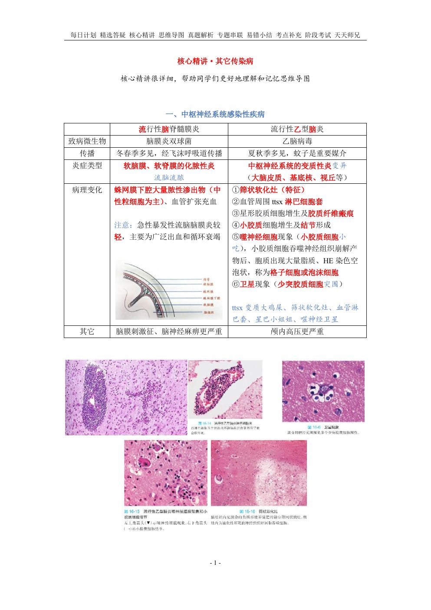
📷 讲义原图 · 第21讲 · 第1页
网站题W2第21讲 · 第1页
流行性乙型脑炎
答案与出处
答案：BCDFGJKNOPQR
📖 第21讲 · 第1页
细菌性痢疾与中毒性痢疾B型题
A 假膜性炎（黏膜的纤维素性炎）
B 卡他性炎——黏膜的浆液性炎、滤泡性炎
网站题W3第21讲 · 第2页
细菌性痢疾
答案与出处
答案：A
📖 第21讲 · 第2页
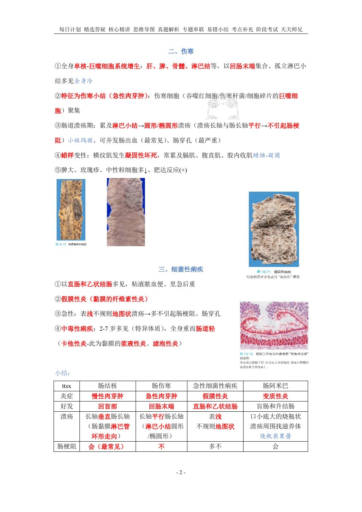
📷 讲义原图 · 第21讲 · 第2页
网站题W4第21讲 · 第2页
中毒性痢疾
答案与出处
肠结核B型题
A 慢性肉芽肿
B 盲肠和升结肠
C 急性肉芽肿
D 回盲部
E 回肠末端
F 直肠和乙状结肠
G 会出现肠梗阻
H 溃疡长轴垂直肠长轴
I 溃疡长轴平行肠长轴
J 不会出现肠梗阻
K 假膜性炎
L 溃疡表浅，不规则地图状
M 多不出现肠梗阻
N 溃疡口小底大的烧瓶状，溃疡周围可找到滋养体
O 变质性炎
网站题W5第21讲 · 第2页
肠结核
答案与出处
网站题W6第21讲 · 第2页
肠伤寒
答案与出处
网站题W7第21讲 · 第2页
急性细菌性痢疾
答案与出处
网站题W8第21讲 · 第2页
肠阿米巴
答案与出处
慢性虫卵结节/假结核结节B型题
A 大量上皮样细胞/类上皮细胞
B 钙化
C 朗汉斯巨细胞
D 少量异物巨细胞（多核巨细胞）
E 少量淋巴细胞
F 大量淋巴细胞
G 成纤维细胞
H 干酪样坏死
I 毛蚴已死亡
网站题W9第21讲 · 第3页
慢性虫卵结节/假结核结节
答案与出处
答案：ABDEGI
📖 第21讲 · 第3页
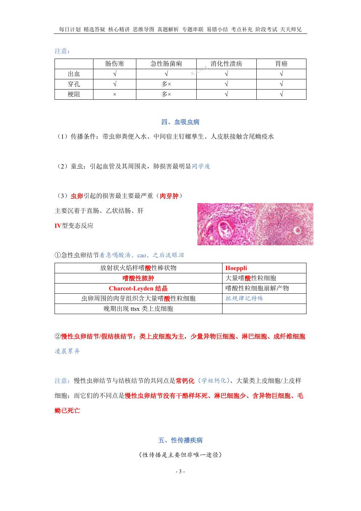
📷 讲义原图 · 第21讲 · 第3页
网站题W10第21讲 · 第3页
结核结节
答案与出处
常见溃疡的好发部位B型题
A 回盲部
B 直肠和乙状结肠
C 回肠末端及邻近结肠
D 胃窦小弯侧
E 胃底、胃体
F 回肠末端
G 盲肠和升结肠
H 直肠和乙状结肠
I 十二指肠球部前壁
J 胃窦小弯侧
K 十二指肠球部
网站题W11第21讲 · 第6页
肠结核
答案与出处
答案：A
📖 第21讲 · 第6页
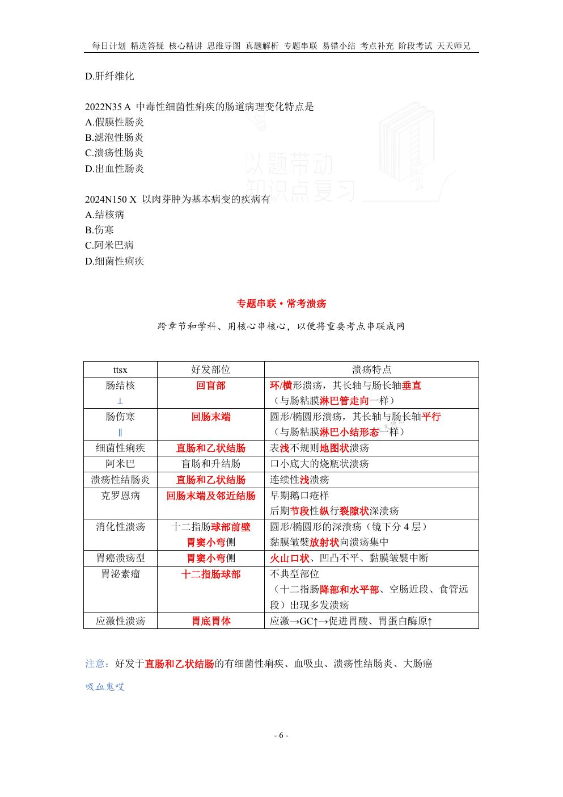
📷 讲义原图 · 第21讲 · 第6页
网站题W12第21讲 · 第6页
肠伤寒
答案与出处
网站题W13第21讲 · 第6页
细菌性痢疾
答案与出处
网站题W14第21讲 · 第6页
阿米巴
答案与出处
网站题W15第21讲 · 第6页
溃疡性结肠炎
答案与出处
网站题W16第21讲 · 第6页
克罗恩病
答案与出处
网站题W17第21讲 · 第6页
消化性溃疡
答案与出处
网站题W18第21讲 · 第6页
胃癌溃疡型
答案与出处
网站题W19第21讲 · 第6页
胃泌素瘤
答案与出处
网站题W20第21讲 · 第6页
应激性溃疡
答案与出处
常见溃疡的形态特点B型题
A 环/横形溃疡，其长轴与肠长轴垂直
B 表浅不规则地图状溃疡
C 早期鹅口疮样，后期节段性纵行裂隙状深溃疡
D 火山口状、凹凸不平、黏膜皱襞中断
E 应激使糖皮质激素升高，促进胃酸、胃蛋白酶原升高
F 圆形/椭圆形溃疡，其长轴与肠长轴平行
G 口小底大的烧瓶状溃疡
H 连续性浅溃疡
I 圆形/椭圆形深溃疡（镜下分4层），黏膜皱襞放射状向溃疡集中
J 不典型部位出现多发溃疡：十二指肠降部和水平部、空肠近段、食管远段
网站题W21第21讲 · 第6页
肠结核
答案与出处
网站题W22第21讲 · 第6页
肠伤寒
答案与出处
网站题W23第21讲 · 第6页
细菌性痢疾
答案与出处
网站题W24第21讲 · 第6页
阿米巴
答案与出处
网站题W25第21讲 · 第6页
溃疡性结肠炎
答案与出处
网站题W26第21讲 · 第6页
克罗恩病
答案与出处
网站题W27第21讲 · 第6页
消化性溃疡
答案与出处
网站题W28第21讲 · 第6页
胃癌溃疡型
答案与出处
网站题W29第21讲 · 第6页
胃泌素瘤
答案与出处
网站题W30第21讲 · 第6页
应激性溃疡
答案与出处
伤寒沙门菌入肠致其发生强烈的过敏反应而导致溃疡形成,此伤寒沙门菌的最主要来源是单项选择教师补充
网站题W31
伤寒沙门菌入肠致其发生强烈的过敏反应而导致溃疡形成,此伤寒沙门菌的最主要来源是(单选)
答案与出处
一期梅毒的病理变化有多项选择教师补充
A 小动脉内皮细胞和纤维细胞增生
B 围管性淋巴细胞浸润,恒定出现
C 树胶样肿
D 硬性下疳
网站题W32第21讲 · 第1页
一期梅毒的病理变化有(多选)
答案与出处
以下关于中毒性细菌性痢疾的说法,错误的有多项选择教师补充
A 严重的全身和肠道症状
B 肠道病变为卡他性炎
C 肠道病变为滤泡性炎
D 2~7 岁多见,病原菌毒力较强
网站题W33第21讲 · 第6页
以下关于中毒性细菌性痢疾的说法,错误的有(多选)
答案与出处
有助于尖锐湿疣诊断的挖空细胞主要出现在单项选择教师补充
网站题W34第21讲 · 第4页
有助于尖锐湿疣诊断的挖空细胞主要出现在(单选)
答案与出处
答案：A
📖 第21讲 · 第4页
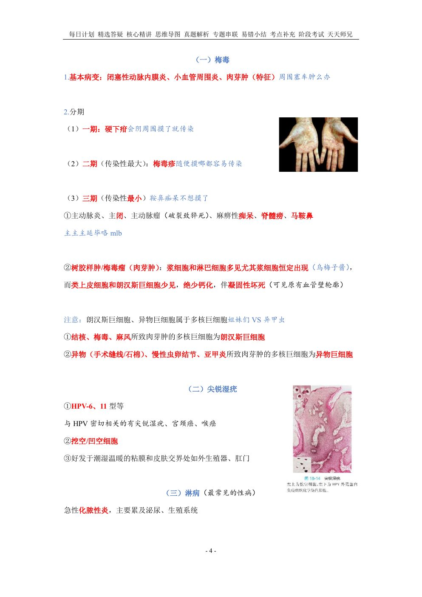
📷 讲义原图 · 第21讲 · 第4页
以下关于血吸虫病的描述,正确的有多项选择教师补充
A 急性虫卵结节是由成熟虫卵引起的坏死、渗出性病灶
B 晚期患者的粪便当中相较早期更易查见虫卵
C 虫卵到达肝脏后主要累及肝左叶的门管区
D 肺内急性虫卵结节的X线类似肺粟粒性结核
网站题W35第21讲 · 第3页
以下关于血吸虫病的描述,正确的有(多选)
答案与出处
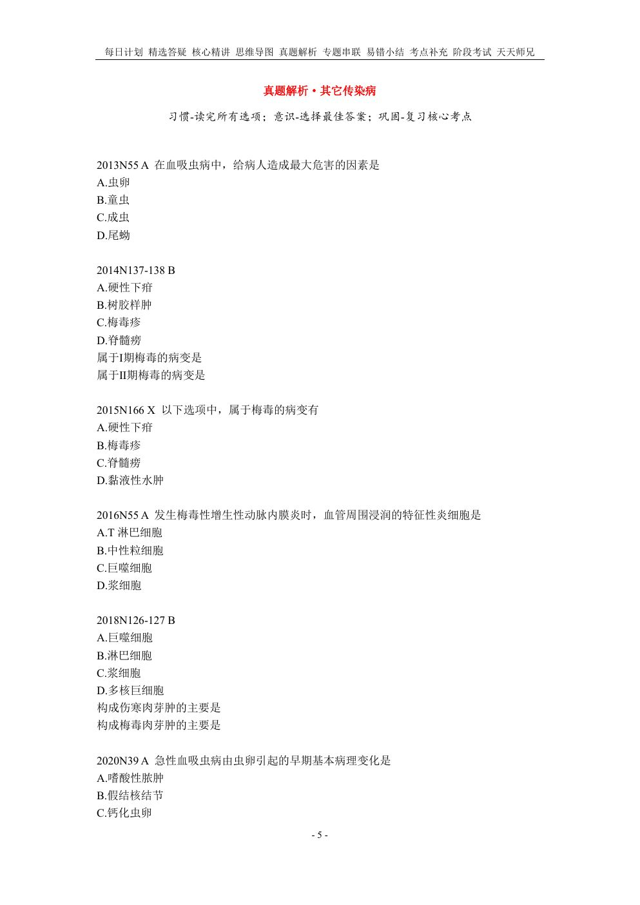
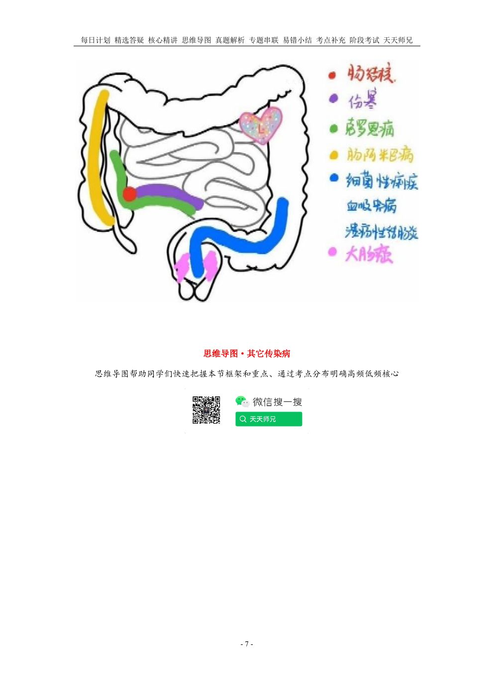